Evolutionary algorithms In the browser and in the server and multi-threaded and everywhere
Por JJ Merelo
FOSDEM 2014
Licensed
under cc-by-sa
and available at http://jj.github.io/js-ga-fosdem/
I love tea
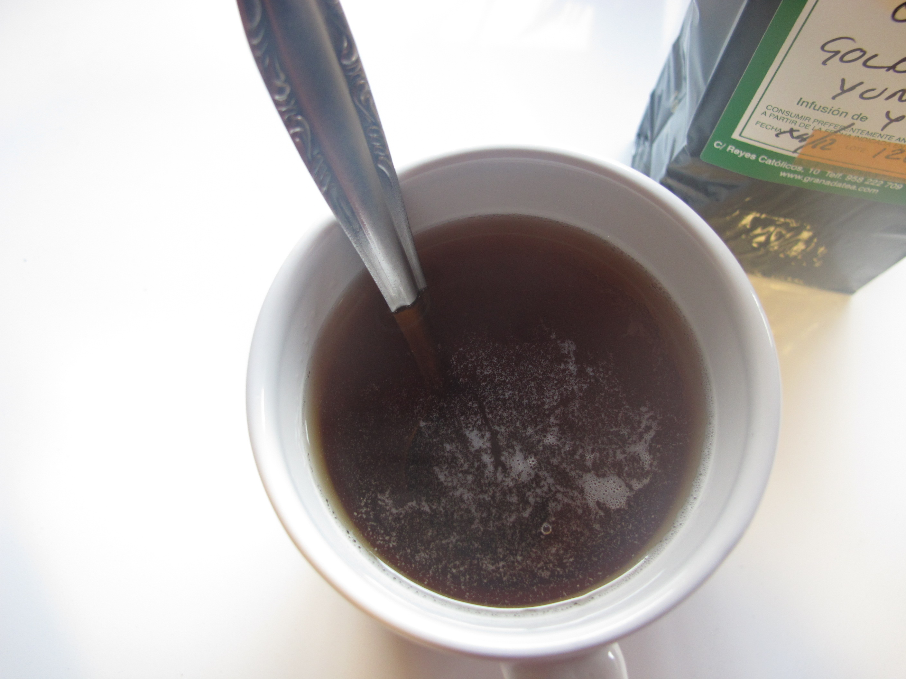I wanted to make the best tea ever
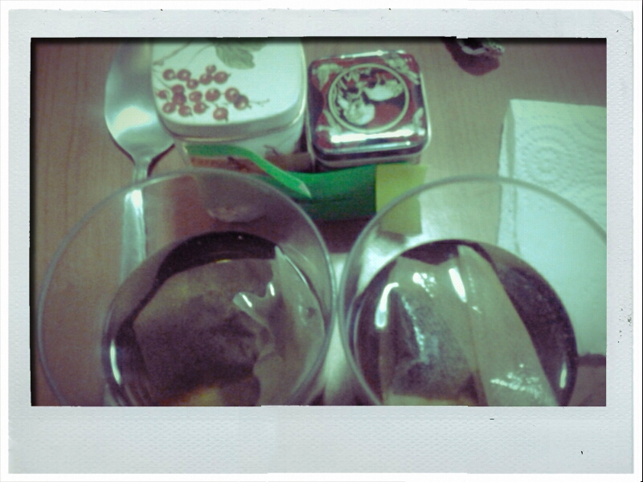Chose four different base teas: Keemun Congou, Maud, Golden Yunnan and Kandy
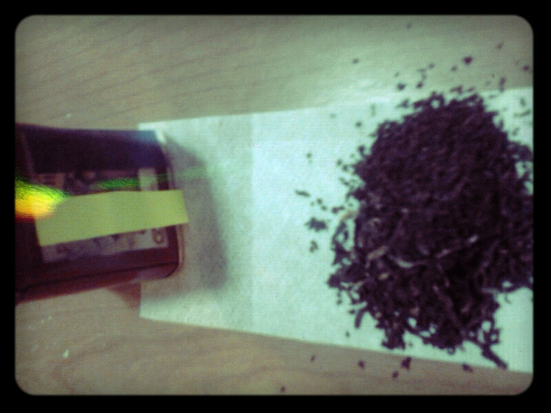And started to mix and match
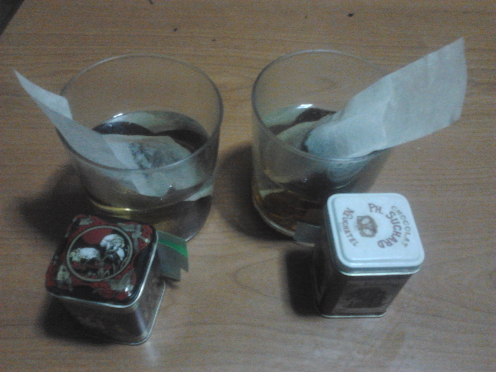Using different recipes
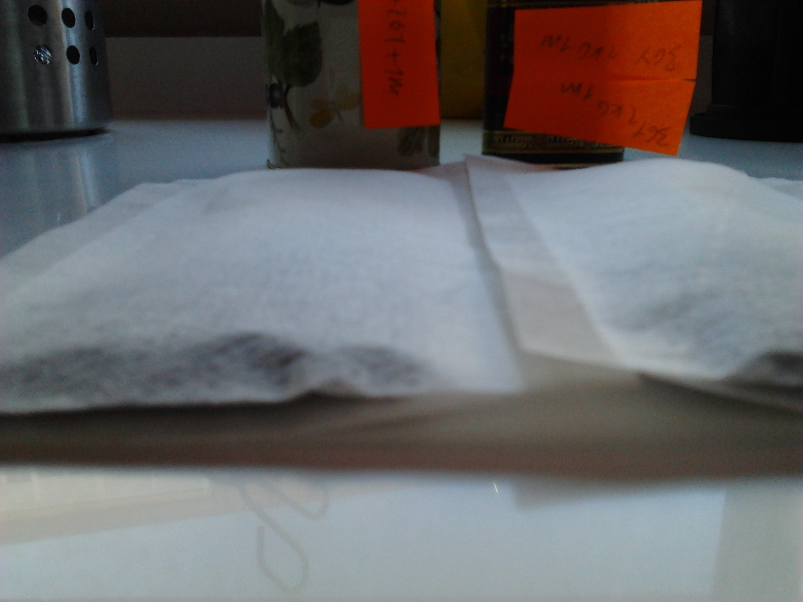I took notes and scored them
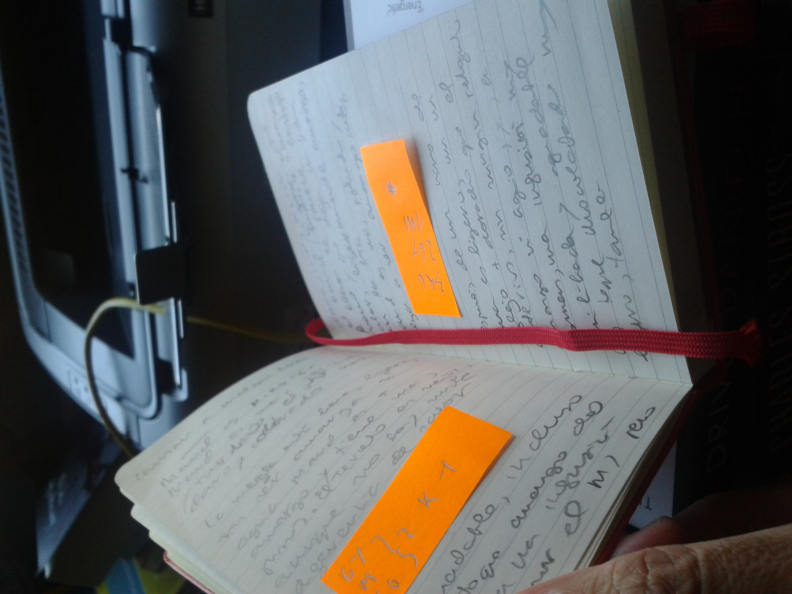Until I found OpenTea

I liked it well enough
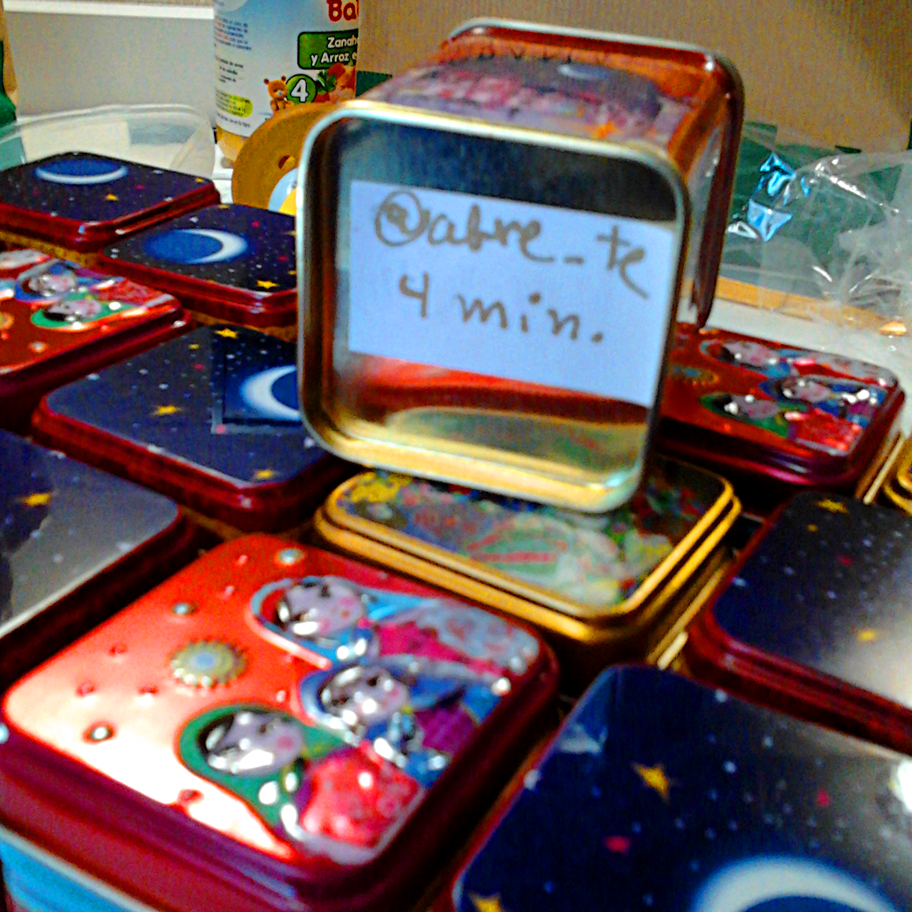But you can't beat hundreds of years of tea-growing
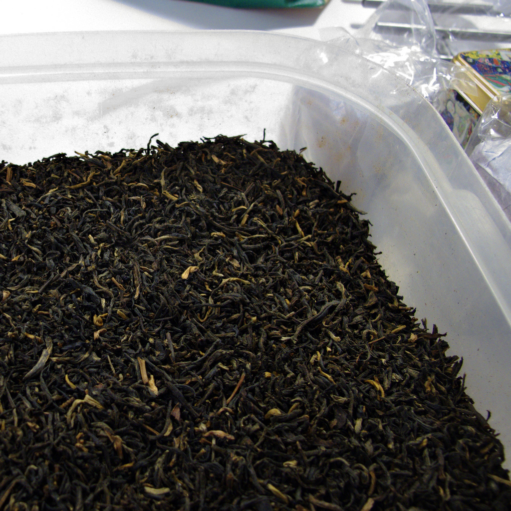Evolution works by random changes and natural selection

And we can use that as an inspiration to solve search and optimization problems
Like finding the best bridge structure
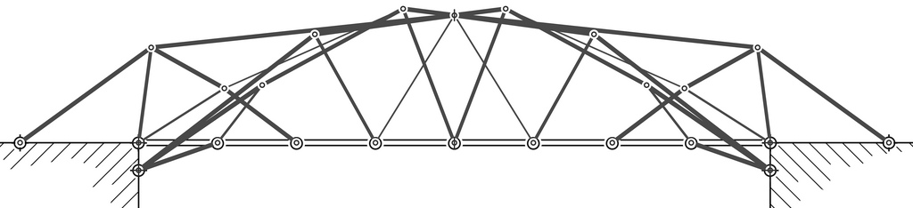Image by Johannes Bader, from his PhD Thesis
First key is random variation: use a population of possible solutions
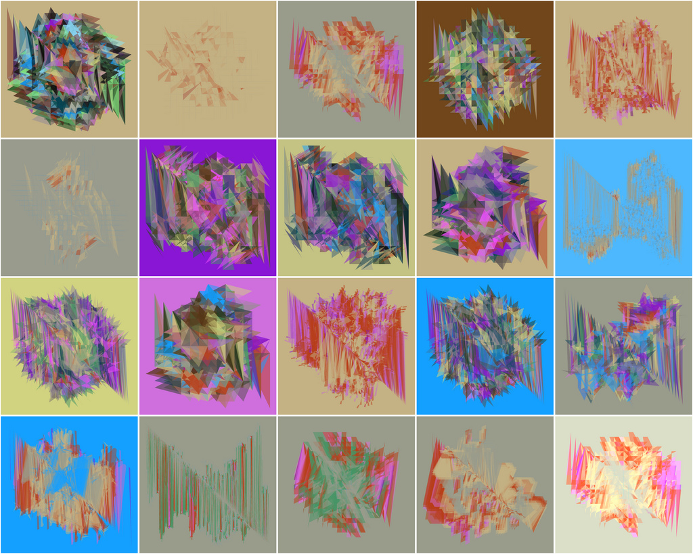Image by Matt Kowal
Random mutation introduces more variations
11111111000000001111111100000000
But that's a mutie!
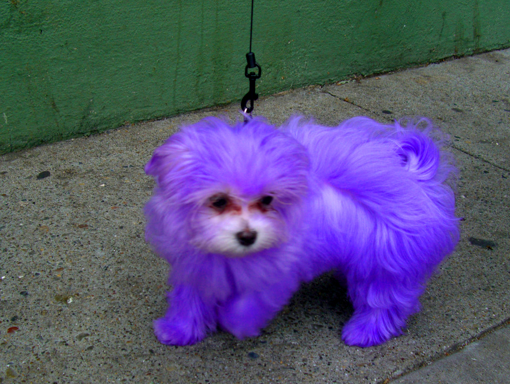Population-based mutation is not much better than random search
It takes you nowhere, and does so very slowly
Is sex still on the table?
11111111000000001111111100000000
00000000111111110000000011111111
It's a blind watchmaker
Crossover creates genetic variability and combines solutions
But who's the king of the hill?
Every individual is evaluated and assigned a fitness. Only the fittest survive
Unfit for JavaScript. Will not survive even if the Red Bull dose is increased.
To every one its own
Only the fittest leave a mark
Let's see how all this plays together
Check it out at http://goo.gl/yXpcKG
Evolution is not for ever
(function do_ea() {
eo.generation();
generation_count++;
if ( (generation_count % 100 === 0) ) {
do_periodic_stuff()
}
if( (eo.fitness_of[eo.population[0]] < traps*conf.fitness.b )
&& ( generation_count*conf.population_size < conf.max_evaluations)) {
setTimeout(do_ea, 5);
} else {
we_are_done()
}
})();
Why would I want anything evolved in the browser
Same reason you want anything done in the browser
- Offload server
- Distribute computational loads
- Interact with user
Newspaper layout optimization
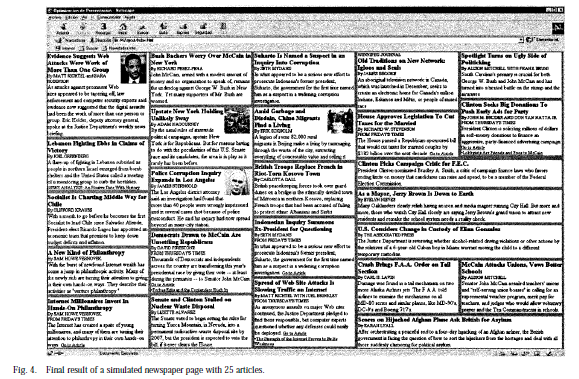Jorge González, Juan J. Merelo Guervós, Pedro A. Castillo Valdivieso, Víctor Manuel Rivas Santos, Gustavo Romero: Optimizing Web Newspaper Layout Using Simulated Annealing. IWANN (2) 1999: 759-768
Volunteer || unwitting computation
With button: volunteer. Without: unwitting
- Get the browser to compute stuff and send it via XHR to the server.
- Send with response more stuff to compute.
- Do it until the experiment is finished.
How many users can you get?
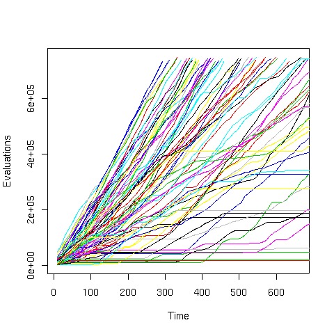Merelo-Guervós, J. J., Castillo, et al. Asynchronous distributed genetic algorithms with Javascript and JSON. In IEEE Congress on Evolutionary Computation, 2008 pp. 1372-1379. IEEE.
Server pains
First version of node.js in 2009. We had SpiderMonkey, but not the same.
Further versions using FluidDB and CouchDB. Not bad, but not excellent. Main problem, dealing with latency
Fast forward to 2014
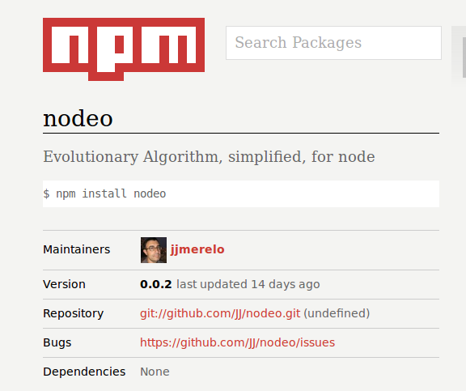Available at http://github.com/JJ/nodeo (+ experimental data)